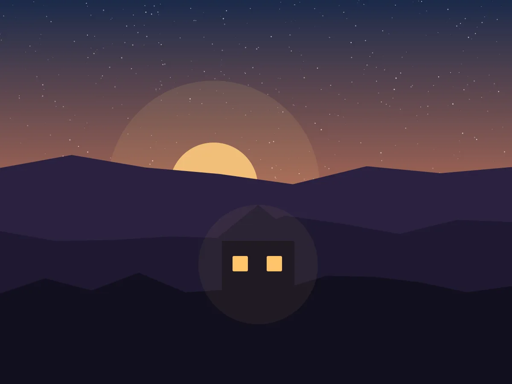
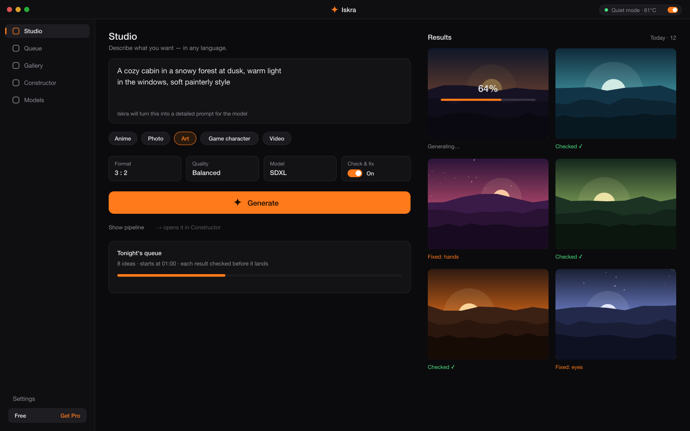
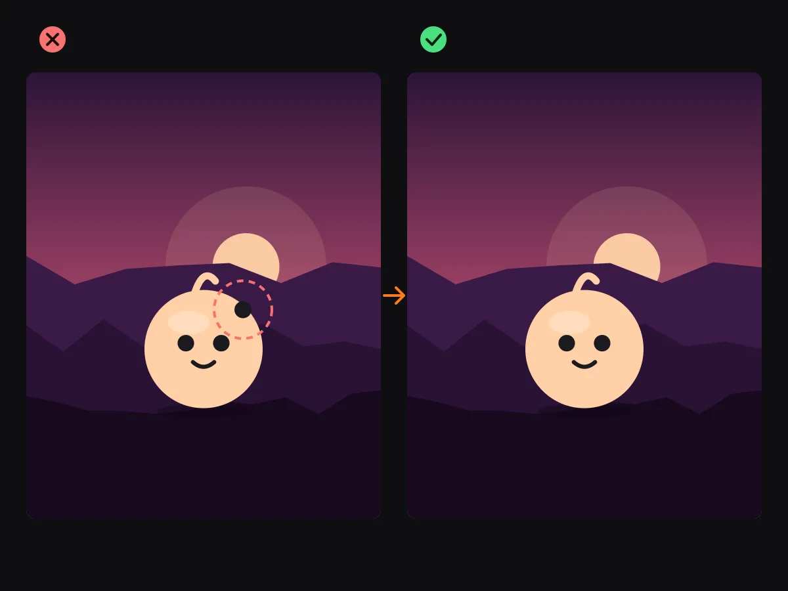
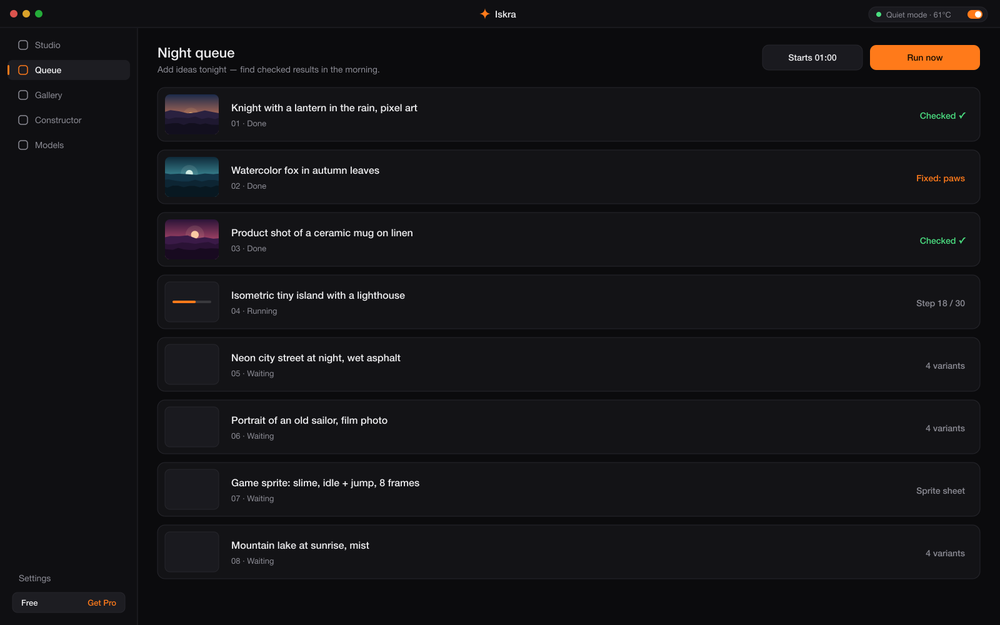
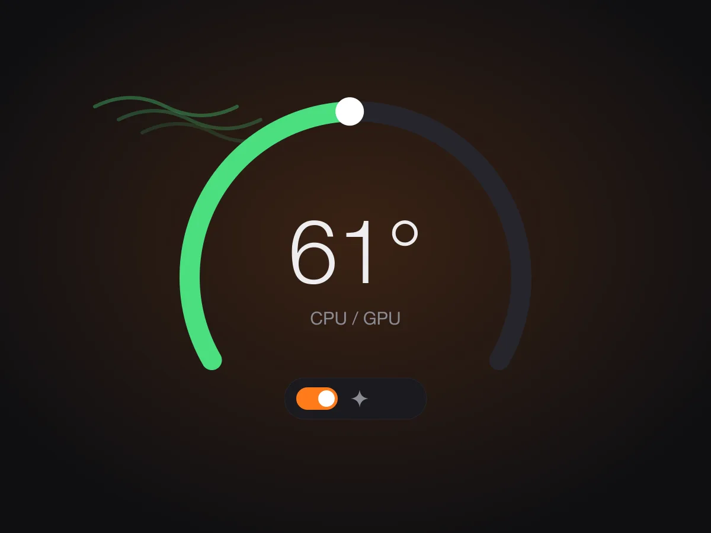
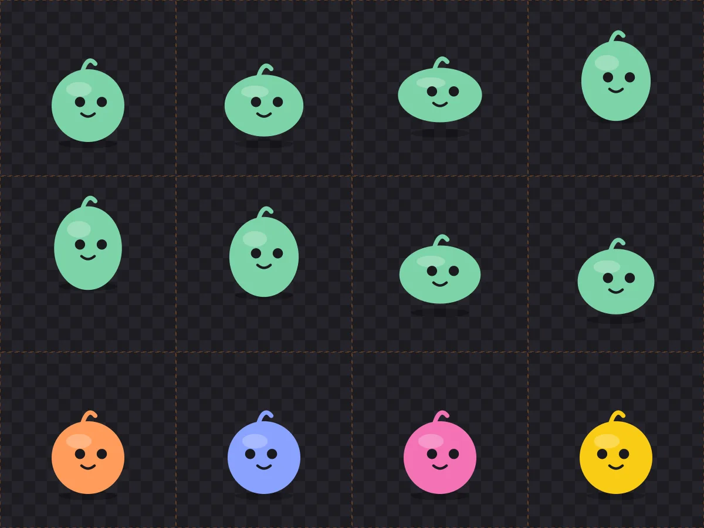
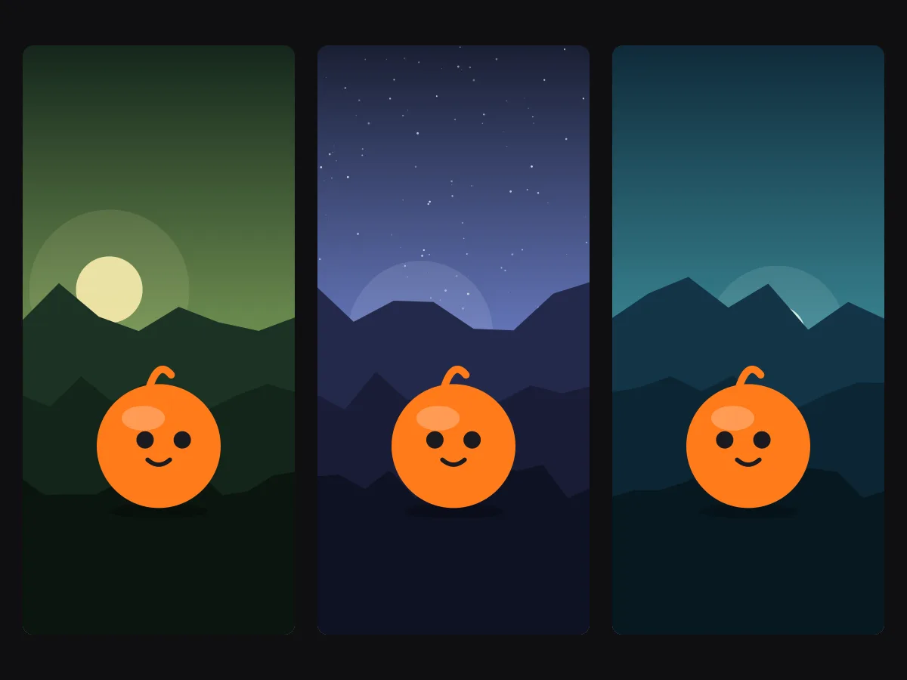
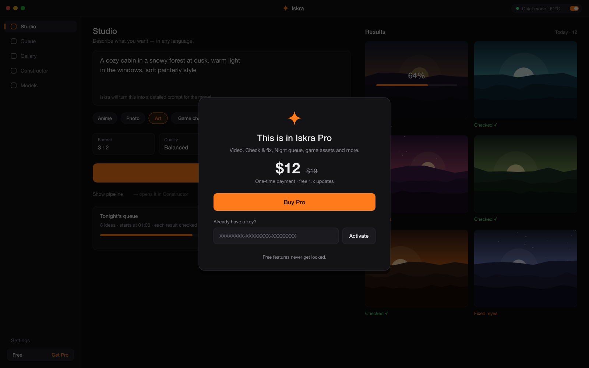

Студія Free
Напишіть, що хочете, звичайними словами — будь-якою мовою. Iskra перетворить це на повноцінний промпт, сама підбере налаштування й показуватиме результати щойно вони будуть готові. Без проводів і жаргону.
Для Mac з Apple Silicon і Windows з NVIDIA
На вашому комп’ютері. Без підписок. Iskra сама перевіряє результат і переробляє брак.
Зображення — безкоштовно назавжди. Pro — разова оплата, без підписки.

Усе, що потрібно локальній студії зображень, — і ще те, що економить години.

Напишіть, що хочете, звичайними словами — будь-якою мовою. Iskra перетворить це на повноцінний промпт, сама підбере налаштування й показуватиме результати щойно вони будуть готові. Без проводів і жаргону.

Iskra перевіряє кожен результат: чи не зламана анатомія і чи відповідає він вашій ідеї. Невдалі — переробляє сама. Менше відбракованого, яке доводиться перебирати.

Складіть список ідей перед сном. Зранку на вас чекатиме тека з готовими, уже перевіреними роботами.

Обмежує температуру й навантаження, щоб ноутбук не грівся й не шумів. Трохи повільніше — зате поруч можна спокійно працювати.

Персонаж → анімація → спрайт-лист на прозорому тлі з JSON-атласом. Одразу можна додавати у свій рушій.

Збережіть вигляд персонажа й переносьте його куди завгодно — нові місця, пози й настрої, а він лишається собою.
Оживіть картинку коротким кліпом. Працює на відкритій моделі Wan 2.2 — просто на вашому комп’ютері.

Кожен рецепт зі Студії — це конвеєр, який можна відкрити. Змініть будь-який крок або зберіть свій з нуля з вузлів зі зрозумілими підписами.
Під час першого запуску майстер із трьох кроків перевірить ваше залізо, встановить рушій і завантажить стартову модель. Без терміналу й Python.
Своїми словами, будь-якою мовою. Оберіть пресет — Аніме, Фото, Арт, Ігровий персонаж чи Відео — і формат.
Готові роботи з’являються у стрічці. Якщо ввімкнено перевірку, Iskra переглядає кожну й спершу переробляє невдалі.
Кожен у чомусь сильний. Чесно про те, де місце Iskra.
| Критерій | Iskra | ComfyUI | Хмарні генератори |
|---|---|---|---|
| Початок роботи | Інсталятор і майстер на 3 кроки, який сам налаштує рушій і стартову модель. | Інсталятор або портативна версія; моделі, воркфлоу й кастомні вузли шукаєте самі. | Нічого встановлювати не треба — достатньо браузера. |
| Приватність | Усе лишається на вашому комп’ютері. | Усе лишається на вашому комп’ютері. | Запити й результати обробляються на серверах сервісу. |
| Вартість | Зображення — безкоштовно. Pro — разово $12 на старті (згодом $19). | Безкоштовно, відкритий код. | Зазвичай щомісячна підписка або платні кредити. |
| Самоперевірка | Вбудована (Pro): перевіряє анатомію та відповідність ідеї, переробляє брак. | Можлива, якщо зібрати чи встановити потрібний воркфлоу. | Зазвичай перегенеровуєте вручну. |
| Мова | Пишіть будь-якою мовою — локальна мовна модель складе промпт. Інтерфейс англійською, українською та російською. | Інтерфейс кількома мовами; промпти найкраще працюють англійською. | Залежить від сервісу; багато хто розуміє кілька мов. |
| Гнучкість | Студія для щоденної роботи, Конструктор — для власних конвеєрів. | Найгнучкіший — величезна екосистема кастомних вузлів. | Обмежена тим, що пропонує сервіс. |
| Залізо | Mac з Apple Silicon або ПК з відеокартою NVIDIA. | Потрібна потужна відеокарта; підтримує більше заліза, ніж Iskra зараз. | Будь-який пристрій із браузером. |
| Вихідний код | Закритий. | Відкритий (GPL-3.0). | Закритий. |
Любите копирсатися у вузлах і розширеннях? ComfyUI — чудовий вибір. Iskra — для тих, кому потрібна просто картинка.
Зображення — безкоштовно й назавжди. Pro відкриває відео та функції, що заощаджують час.
Усе, щоб створювати зображення.
Без акаунта й без обмеження в часі.
Для відео, ігор і щоб встигати більше.
≈ ₴500 · довічна ліцензія на Iskra 1.x.
Разова оплата, а не підписка. Усі оновлення 1.x — безкоштовно. Не сподобалося — повернемо гроші протягом 14 днів. Оплата в доларах через Gumroad; сума в гривнях орієнтовна.

Для першого налаштування потрібен інтернет, щоб завантажити рушій і моделі. Відео значно важче за зображення: що більше пам’яті, то коротше чекати.
Так. Зображення й відео генеруються повністю на вашому комп’ютері — ваші описи та результати нікуди не вивантажуються.
В інтернет Iskra виходить лише для завантаження рушія та обраних вами моделей, а з Pro — щоб приблизно раз на тиждень перевірити ліцензійний ключ. Без інтернету Pro працює до 30 днів між перевірками.
Iskra не містить моделей у комплекті: під час налаштування вона завантажує стартову модель з Hugging Face, а інші можна додати у вікні Моделі. Для кожної моделі там вказано ліцензію та чи можна використовувати результати комерційно.
Стартова модель за замовчуванням — SDXL з ліцензією CreativeML Open RAIL++-M: комерційне використання дозволене в межах її обмежень. Для відео — Wan 2.2 (Apache 2.0). Деякі популярні моделі, як-от FLUX.1 [dev], некомерційні — Iskra чітко їх позначає. Якщо сумніваєтеся, прочитайте ліцензію моделі, якою користуєтеся.
Iskra поки не підписана платним сертифікатом Apple Developer, тому під час першого запуску macOS показує попередження. Дозволити запуск треба лише один раз:
Якщо macOS пише, що програму «пошкоджено», виконайте в Терміналі цю команду й відкрийте Iskra знову: xattr -dr com.apple.quarantine /Applications/Iskra.app
Це фільтр SmartScreen: інсталятор поки не має цифрового підпису. Натисніть Докладніше, а потім Усе одно запустити. Для кожного інсталятора це потрібно лише раз.
Free — це Студія й Конструктор для зображень, усі моделі для зображень, тихий режим, галерея та стиснення зображень. Без обмеження в часі.
Pro додає відео із зображення, перевірку й виправлення браку, нічну чергу та пакетну генерацію, ассети для ігор (спрайт-листи), одного персонажа в нових сценах, а також збільшення до 2K/4K з деталізацією. Оплата разова: $12 на старті (≈ ₴500), згодом $19. Безкоштовні функції ніколи не блокуються.
Так. Якщо Pro вам не підійшов, дайте відповідь на лист-квитанцію від Gumroad протягом 14 днів після покупки — і ми повернемо всю суму.
Чесно — поки ні. Зараз Iskra підтримує Mac з Apple Silicon (M1 і новіші) та ПК з Windows і відеокартою NVIDIA. Mac з Intel, відеокарти AMD та Intel, а також Linux не підтримуються. Перш ніж купувати Pro, спробуйте безкоштовну версію на своєму залізі.
Завантажте Iskra безкоштовно. Pro знадобиться, лише якщо захочете відео та функції, що економлять час.
macOS (Apple Silicon) · Windows 10/11 (NVIDIA)